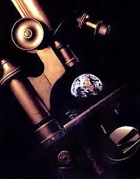

Our goals
We at Faymetrics are committed to producing and distributing
high quality software and hardware relating to Meteorology, the environment and active research.
Meteorology
Systematic and structured weather monitoring and recording is essential in developing vast databases
of historic weather conditions.
Advanced AI and MLR software can provide valuable
predictions of extreme weather phenomena and
prevent catastrophes.
Environment
Air quality and air decarbonization are essential for humanity’s wellbeing and preservation of our
planet’s ecosystem.
Our unique sensor technologies (LIDARs) combined with our proprietary
platform capabilities give a
breath of fresh air to our planet.
Innovation
Faymetrics has a long track record of developing highly innovative products suitable for the
top-quality requirements of scientific applications.
Our products can be customized and satisfy the highest requirements of a portfolio of scientific
interest.
What we offer
Our company offers state-of-the-art systems that cover a diverse set of challenging problems
relating to meteorology, the environment, the protection of forests and natural landmarks, as well
as research and innovation.
We excel at manufacturing market backscatter, depolarization and
Raman LIDARs for atmospheric
applications, as well as components such as telescopes designed specifically for LIDARs.
Innovative LIDAR Technology has moved from the lab to the real world, offering a multitude of
atmospheric detection applications for national weather and meterological services
The innovations of LIDAR technology, based on extensive R&D efforts, have evolved into impactful
environmental applications A multitude of atmospheric detection applications allow us to address the
challenges of air pollution, emissions identification, reduction andelimination, as well as risk
management of environmental hazards.

Research
Since beginning operations in 2022, Faymetrics core clients has been the atmospheric research
community. The company has since maintained close ties with academia over the years in order to
continue developing high-innovation products suitable for top quality research
